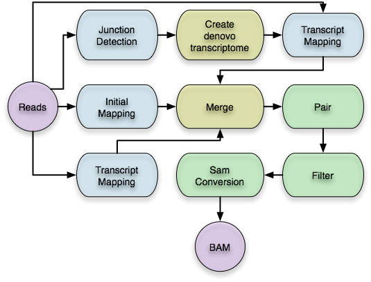
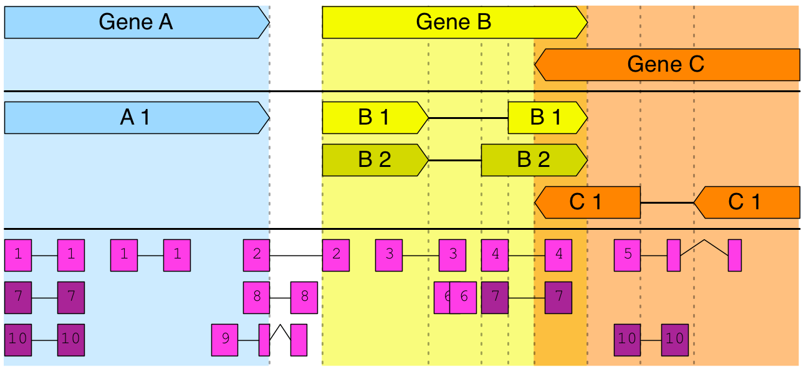
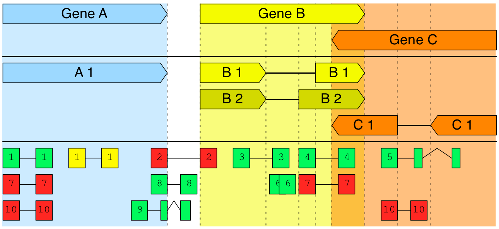
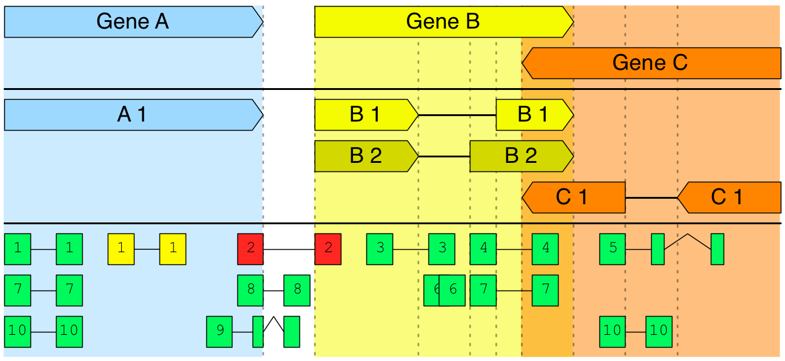
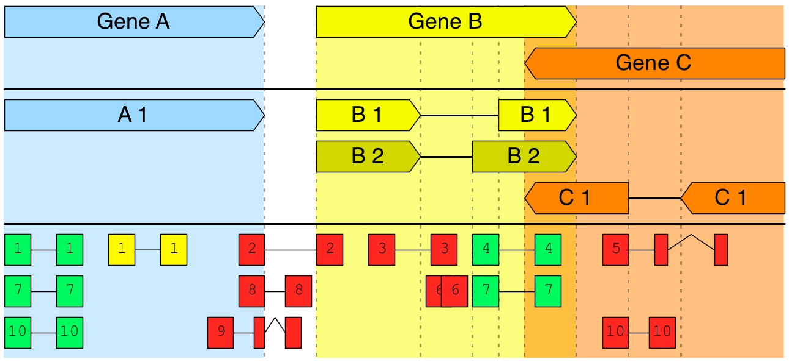
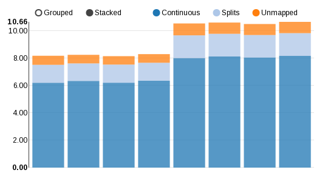
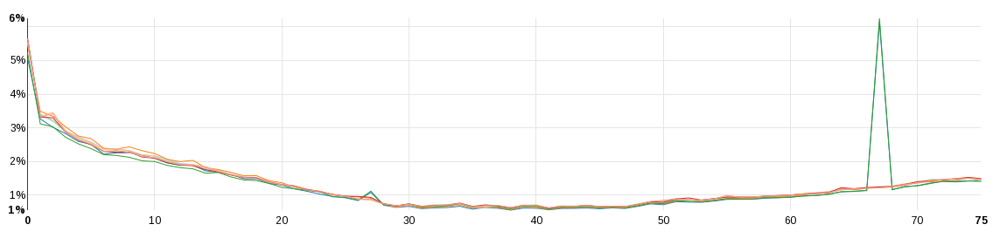
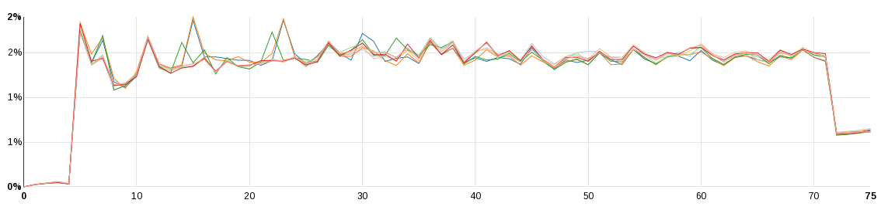
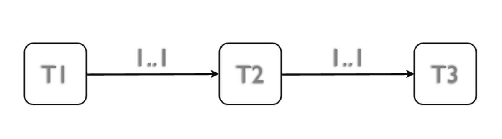

RNA-Seq Pipelines
Thasso Griebel
Applications
- Quantification
- Assembly
- Fusion Detection
- Gene Model prediction
- ...
General Steps
- Quality Control of the reads
- Mapping
- Quality Control of the mapping
- Filter
- ...
FastQC
http://www.bioinformatics.babraham.ac.uk/projects/fastqc/

GEM
http://algorithms.cnag.cat
GEMTools
http://gemtool.github.io
- Wrap GEM
- Stats
- Filter
- Count
- ...
GEMTools RNA-Seq pipeline
Mapping Steps
All reads against:
- genome
- annotation transcriptome
- de-novo transcriptome
Filtering
This depends on the application!
The default filter:
- minimum exon overlap: 5
- minimum intron length: 20
- Keep unique mappings
- Not more than 5 alignments
Counts
GEMTools can create gene-level counts
- given annotation
- given gene model
- weighted multi-maps
- full exon overlap
Gene counts example
NO Multi-maps
A: 6 B: 6 C: 2
Multi-maps
A: 10 B: 8 C: 4
Weighted with Exon overlap
A: 5.0 B: 3.0 C: 0
Mapping QC
- mapped reads
- multi maps
- errors
- split maps
- ...
Mapped Reads
Error Positions
Junction Positions
GEMTools RNA-Seq pipeline
What is a "Pipeline"
“Computer-related pipelines include: Software pipelines, where commands can be written so that the output of one operation is automatically used as the input to the next, following operation.”
Example: Counts
- Open my compressed table.gz file
- Extract the second column
- Find all occurrences of "105"...
- ...and count them
zcat table.gz | awk '$2 == 105' | wc -l
A Pipeline
Tool
- smallest executable unit
- defined input
- defined output
Be precise, the small things count
Input file
read_id \t count_a \t count_b
The script
awk '{x =+ $3}END{print x}' data.txt
Casava < 1.8
a/1 5 17
a/2 4 21
Casava >= 1.8
a 1:N:18 5 17
a 2:N:18 4 21
awk -F'\t' '{x =+ $3}END{print x}' data.txt
Dependencies
- Build a tree of tool (or a graph)
- Execute in the proper order
- Delegate data
Cluster integration
- Mange runtimes
- Threads
- Memory
And why do we need all this
- RNA-Seq experiments are large
- There is no simple solution
- Experiments evolve
- Reproducibility